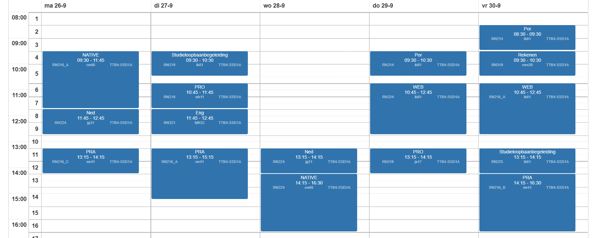

VAKKEN
REK/NED/ENG
Dit zijn die generieke vakken die belangrijk zijn voor je diploma
WIN
Hier leer je programmeren voor windows, bijvoorbeeld in python en C#
WEB
Hier leer je hoe je websites moet maken, bijvoorbeeld in PHP en html
PRO
Hier leer je wat je allemaal doet voor en
na het programmeren
PRA
Hier ga je zelfstandig aan de slag met verschilende opdrachten
DIV
Hier leer je hoe de digitale compuer werkt
ROOSTER
